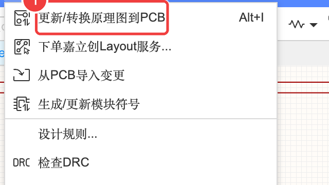
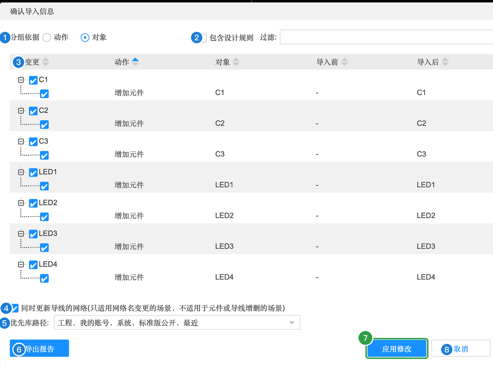
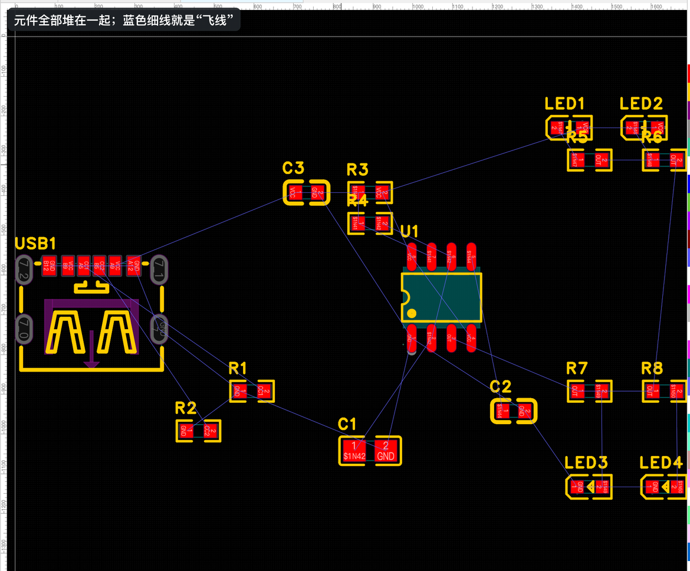

A-3 原理图转 PCB
原理图画好了，现在把它“搬”到 PCB 里。这一步软件一键完成：每个元件的符号会变成 PCB 上的封装（真实的焊盘），原理图里的连线会变成“飞线”，提醒你哪些焊盘之间还要连铜线。
A3.1 更新 / 转换原理图到 PCB#
- 先 ⌘S 保存原理图
- 点菜单「设计」→「更新/转换原理图到PCB」（快捷键 ⌥I）

软件会自动打开同一个板子（Board1）下的 PCB1，并弹出「确认导入信息」对话框，列出这次要做的所有改动：

确认导入信息对话框
| 编号 | 属性 | 含义（大白话） | 本例怎么填 | 什么时候需要改 |
|---|---|---|---|---|
| 1 | 分组依据 | 列表按“动作”（增加 / 删除 / 修改）分组，还是按“对象”（每个元件）分组 | 默认 | 改动很多时切换着看 |
| 2 | 包含设计规则 / 过滤 | 是否把原理图里设的规则也一起导入；“过滤”可以只显示某一类改动 | 默认 | — |
| 3 | 变更 / 动作 / 对象 / 导入前 / 导入后 | 每一行是一条改动：勾选的才会执行。第一次导入时全部是“增加元件”，导入前为空，导入后是位号 | 全部勾选 | 以后修改原理图再导入时，这里会出现“修改”“删除”，要看清楚 |
| 4 | 同时更新导线的网络 | 只在“改了网络名”时有用：顺便把 PCB 里已经画好的导线改成新网络名 | 默认 | 以后改网络名时 |
| 5 | 优先库路径 | 找封装时先在哪些库里找 | 默认 | — |
| 6 | 导出报告 | 把改动清单存成文件 | 不用 | — |
| 7 | 应用修改 | 执行改动 | 点它 | — |
| 8 | 取消 | 什么都不做 | — | — |
- 检查一遍列表（17 个元件都在），点「应用修改」
A3.2 认识 PCB 编辑器#
应用之后，PCB 画布上会出现所有元件的封装，一开始都堆在一起，还在板子外面（现在也还没有板子）：

PCB 编辑器各个区域的作用见 1.0 节的 PCB 热点图。
A3.3 原理图和 PCB 是怎么对应的#
原理图里的每一个符号，在 PCB 里都有一个对应的封装，位号相同。点下面的位号试试：
| 原理图里 | 到了 PCB 里 |
|---|---|
| 符号（方框 + 引脚线） | 封装（焊盘 + 丝印外框） |
| 导线、网络标签、电源符号 | 飞线（提醒你要连铜线） |
| 元件摆在哪里 | 和 PCB 无关，PCB 里要重新摆 |
| 位号、值 | 一样，丝印上会印位号 |